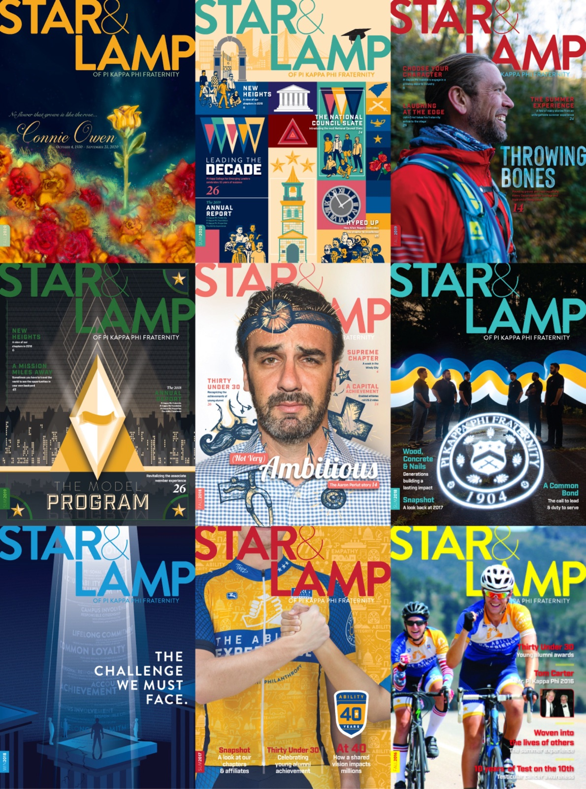
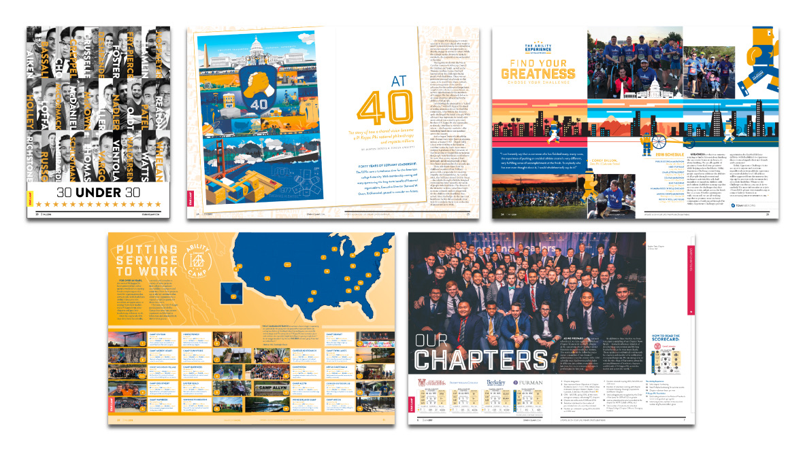
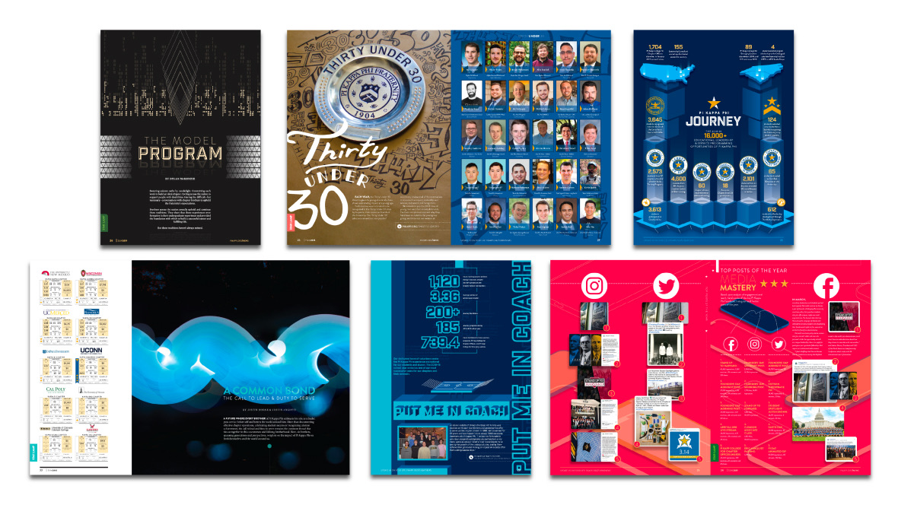
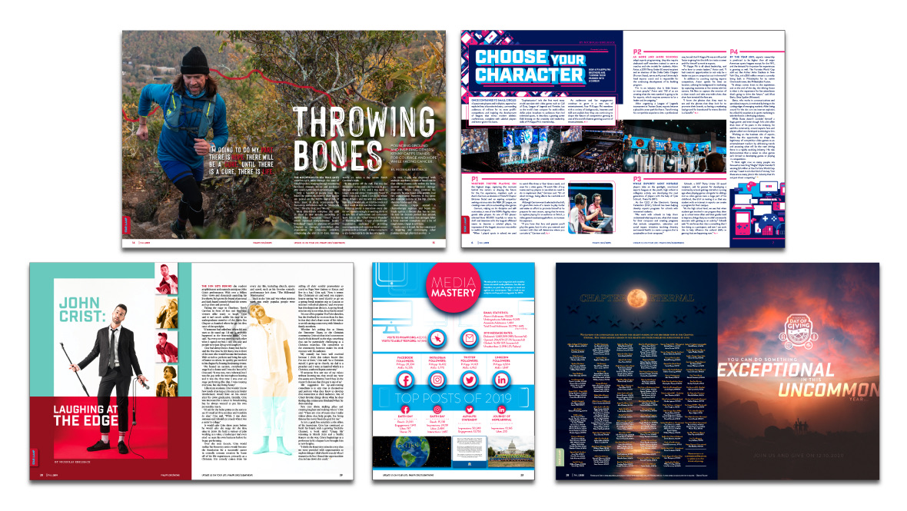
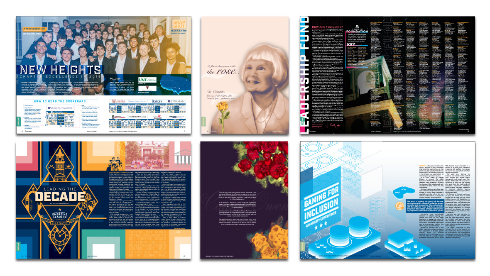

Art Direction & Layout Design
Star & Lamp
Modernizing a century-old publication. I led the layout and art direction for the official Pi Kappa Phi magazine.

First published in the fall of 1909, the Star & Lamp is the magazine of Pi Kappa Phi Fraternity and is produced in-house. As the official publication of the organization, the Star & Lamp serves as a forum of communication to educate, inspire, and move to action members on fraternity, Greek, and men's issues. From primary designer to the creative director (while still designing), this magazine evolved from a rinse-and-repeat brochure to an industry, award-winning publication.
Fraternity Communications Association Awards
2019 — 3rd Place Overall Magazine Excellence
2018 — 3rd Place Overall Magazine Excellence
Issues of the Star & Lamp
- 2020
- Fall · Spring
- 2019
- Fall · Spring
- 2018
- Fall · Spring
- 2017
- Fall · Summer
- 2016
- Fall



